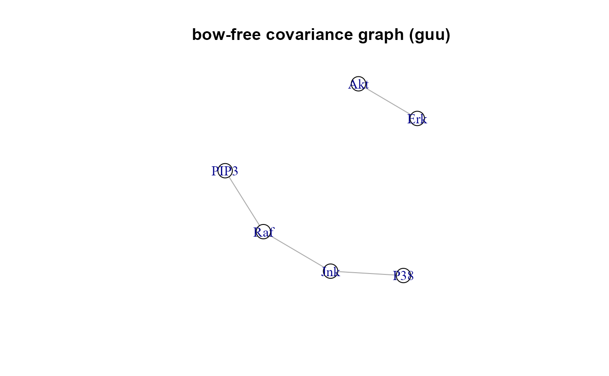

SEMbap() function implements different deconfounding
methods to adjust the data matrix by removing latent sources of confounding
encoded in them. The selected methods are either based on: (i) Bow-free
Acyclic Paths (BAP) search, (ii) LVs proxies as additional source nodes of
the data matrix, Y or (iii) spectral transformation of Y.
SEMbap(
graph,
data,
group = NULL,
dalgo = "cggm",
method = "BH",
alpha = 0.05,
hcount = "auto",
cmax = Inf,
limit = 200,
verbose = FALSE,
...
)Arguments
- graph
An igraph object.
- data
A matrix whith rows corresponding to subjects, and columns to graph nodes (variables).
- group
A binary vector. This vector must be as long as the number of subjects. Each vector element must be 1 for cases and 0 for control subjects. If
NULL(default), confouding within group will not be considered.- dalgo
Deconfounding method. Four algorithms are available:
"cggm" (default). The algorithm make: (i) exhaustive search of bow-free significant covariances (see details) through
Shipley.testfunction; (ii) estimation of the inverse of the selected covariance matrix (i.e. the precision matrix, W) throughfitConGraphfunction; (iii) obtain the de-correlated data matrix, Z by multiplying the data matrix, Y rightward by the square root of the estimated precision matrix, Z=YW^(1/2) as suggested by Grassi, Palluzzi and Tarantino (2022)."glpc". The algorithm first makes an exhaustive search of bow-free significant covariances through
Shipley.testfunction. Once obtained the adjacency matrix, Graph-Laplacian PCA (gLPCA) algorithm (Jiang et al., 2013) learns a low dimensional representation of the observed data matrix that incorporates bow-free structure. Then, the DAG is extended by including the confounding proxies, i.e. LVs, as additional source nodes defined by last q principal component scores of gLPCA and these LV scores are added to the data matrix, Z=cbind(LV,Y)."pc". The procedure add additional source nodes to DAG as in "glpc" algorithm, but confounding proxies are the q principal component scores extracted by Spectral decomposition (SVD) selecting only graph nodes and without graph edge information and bow-free covariance search.
"trim". Ćevid et al. (2020) suggest multiplying the data matrix, Y leftward by a well selected spectrum transformation matrix, T which modifies the singular values of Y, while keeping its singular vectors intact, Z=TY. Trim transform limits all singular values to be at most some costant (t), where t = median of the singuar values.
- method
Multiple testing correction method. One of the values available in
p.adjust. By default,methodis set to "BH" (i.e., Benjamini-Hochberg multiple test correction).- alpha
Significance level for false discovery rate (FDR) used for d-separation test. This argument is used to control data de-correlation. A higher
alphalevel includes more hidden covariances, thus considering more sources of confounding. Ifalpha = 0, data de-correlation is disabled. By default,alpha = 0.05.- hcount
The number of latent (or hidden) variables. By default
hcount="auto", the hidden count is determined with a permutation method (see details). Currently ignored if (dalgo ="cggm" or "trim").- cmax
Maximum number of parents set, C. This parameter can be used to perform only those tests where the number of conditioning variables does not exceed the given value. High-dimensional conditional independence tests can be very unreliable. By default, cmax = Inf.
- limit
An integer value corresponding to the graph size (vcount) tolerance. Beyond this limit, the precision matrix is estimated by "glasso" algorithm (FHT, 2008) to reduce the computational burden of the exaustive BAP search of the
Shipley.testprocedure. By default,limit = 200.- verbose
A logical value. If FALSE (default), the processed graphs will not be plotted to screen.
- ...
Currently ignored.
Value
A list of four objects:
"dag", the directed acyclic graph (DAG) extracted from input graph. If (dalgo = "glpc" or "pc"), the DAG also includes LVs as source nodes.
"guu", the bow-free covariance graph, BAP = dag + guu. If (dalgo = "pc" or "trim"), guu is equal to NULL
"adj", the adjacency matrix of selected bow-free covariances; i.e, the missing edges selected after multiple testing correction. If (dalgo = "pc" or "trim"), adj matrix is equal to NULL.
"data", the adjusted (de-correlated) data matrix or if (dalgo = "glpc", or "pc"), the combined data matrix, where the first columns represent LVs scores and the other columns are the raw data.
Details
Missing edges in causal network inference using a directed acyclic
graph (DAG) are frequently hidden by unmeasured confounding variables.
A Bow-free Acyclic Paths (BAP) search is performed with d-separation tests
between all pairs of variables with missing connection in the input DAG,
adding a bidirected edge (i.e., bow-free covariance) to the DAG when there
is an association between them. The d-separation test evaluates if two
variables (Y1, Y2) in a DAG are conditionally independent for a given
conditioning set, C represented in a DAG by the union of the parent sets
of Y1 and Y2 (Shipley, 2000).
A new bow-free covariance is added if there is a significant (Y1, Y2)
association at a significance level alpha, after multiple testing
correction. The selected covariance between pairs of nodes is interpreted
as the effect of a latent variable (LV) acting on both nodes; i.e., the LV
is an unobserved confounder. BAP-based algorithms adjust (or de-correlate)
the observed data matrix by conditioning out the latent triggers responsible
for the nuisance edges.
For "pc" algorithm the number of hidden proxies, q is determined by a permutation
method. It compares the singular values to what they would be if the variables
were independent, which is estimated by permuting the columns of the data matrix,
Y and selects components if their singular values are larger than those of the
permuted data (for a review see Dobriban, 2020).
While for "glpc" algorithm, q is determined by the number of clusters by
spectral clustering through cluster_leading_eigen function.
If the input graph is not acyclic, a warning message will be raised, and a
cycle-breaking algorithm will be applied (see graph2dag
for details).
References
Grassi M, Palluzzi F, Tarantino B (2022). SEMgraph: An R Package for Causal Network Analysis of High-Throughput Data with Structural Equation Models. Bioinformatics, 38(20), 4829–4830. <https://doi.org/10.1093/bioinformatics/btac567>
Shipley B (2000). A new inferential test for path models based on DAGs. Structural Equation Modeling, 7(2), 206-218. <https://doi.org/10.1207/S15328007SEM0702_4>
Jiang B, Ding C, Bin L, Tang J (2013). Graph-Laplacian PCA: Closed-Form Solution and Robustness. IEEE Conference on Computer Vision and Pattern Recognition, 3492-3498. <https://doi.org/10.1109/CVPR.2013.448>
Ćevid D, Bühlmann P, Meinshausen N (2020). Spectral deconfounding via perturbed sparse linear models. J. Mach. Learn. Res, 21(232), 1-41. <http://jmlr.org/papers/v21/19-545.html>
Dobriban E (2020). Permuatation methods for Factor Analysis and PCA. Ann. Statist. 48(5): 2824-2847 <https://doi.org/10.1214/19-AOS1907>
Friedman J, Hastie T, Tibshirani R (2008). Sparse inverse covariance estimation with the graphical lasso. Biostatistics, 9(3), 432-441. <https://doi.org/10.1093/biostatistics/kxm045>
Examples
#Set function param
graph <- sachs$graph
data <- log(sachs$pkc)
group <-sachs$group
# BAP decounfounding with CGGM (default)
bap <- SEMbap(graph, data, verbose = TRUE)
#> DAG conversion : TRUE
#> Bow-free covariances search. Use method: cggm ...
#> Number of bow-free covariances / df : 4 / 37
#> Max parent set(S) / Sparsity idx(s) : 5 / 18
#> Number of clusters / number of nodes: 3 / 6
#>

 #> RICF solver ended normally after 2 iterations
#>
#> deviance/df: 7.592303 srmr: 0.0426697
#>
# SVD decounfounding with trim method
svd <- SEMbap(graph, data, dalgo = "trim")
#> DAG conversion : TRUE
#> Estimated 4 (68%) latent confounders
# Model fitting (with node-perturbation)
sem1 <- SEMrun(graph, data, group)
#> NLMINB solver ended normally after 5 iterations
#>
#> deviance/df: 61.84444 srmr: 0.0701161
#>
#> Brown's combined P-value of node activation: 2.664535e-15
#>
#> Brown's combined P-value of node inhibition: 0.2368274
#>
bap1 <- SEMrun(bap$dag, bap$data, group)
#> NLMINB solver ended normally after 1 iterations
#>
#> deviance/df: 8.241544 srmr: 0.0366263
#>
#> Brown's combined P-value of node activation: 6.665335e-12
#>
#> Brown's combined P-value of node inhibition: 5.175634e-05
#>
svd1 <- SEMrun(svd$dag, svd$data, group)
#> NLMINB solver ended normally after 1 iterations
#>
#> deviance/df: 36.71868 srmr: 0.0812168
#>
#> Brown's combined P-value of node activation: 3.104739e-12
#>
#> Brown's combined P-value of node inhibition: 0.2443171
#>
#> RICF solver ended normally after 2 iterations
#>
#> deviance/df: 7.592303 srmr: 0.0426697
#>
# SVD decounfounding with trim method
svd <- SEMbap(graph, data, dalgo = "trim")
#> DAG conversion : TRUE
#> Estimated 4 (68%) latent confounders
# Model fitting (with node-perturbation)
sem1 <- SEMrun(graph, data, group)
#> NLMINB solver ended normally after 5 iterations
#>
#> deviance/df: 61.84444 srmr: 0.0701161
#>
#> Brown's combined P-value of node activation: 2.664535e-15
#>
#> Brown's combined P-value of node inhibition: 0.2368274
#>
bap1 <- SEMrun(bap$dag, bap$data, group)
#> NLMINB solver ended normally after 1 iterations
#>
#> deviance/df: 8.241544 srmr: 0.0366263
#>
#> Brown's combined P-value of node activation: 6.665335e-12
#>
#> Brown's combined P-value of node inhibition: 5.175634e-05
#>
svd1 <- SEMrun(svd$dag, svd$data, group)
#> NLMINB solver ended normally after 1 iterations
#>
#> deviance/df: 36.71868 srmr: 0.0812168
#>
#> Brown's combined P-value of node activation: 3.104739e-12
#>
#> Brown's combined P-value of node inhibition: 0.2443171
#>